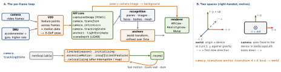

ios-platform · folio
In one line: ARKit fuses feature points tracked across camera frames with the IMU
(visual-inertial odometry) into a 6-DoF camera pose in a gravity-aligned world in
metres; each tick is an ARFrame, and what it recognises (planes, images, faces, meshes)
becomes anchors it keeps correcting. RealityKit renders on top: an
Entity-Component-System engine (ARView in UIKit, RealityView in SwiftUI from
iOS 18) drawing USD content locked to those anchors.
Download PDF Print view LaTeX source


How ARKit works
ARSessionruns one configuration;run(cfg, options: [.resetTracking, .removeExistingAnchors])starts over,pause()frees the camera. The delegate gets frames, anchor add/update/remove, tracking-state changes, interruptions.
AR…Configuration | |
|---|---|
| World | back camera, 6 DoF: planes, images, objects, mesh, depth, people |
| Face | front: ARFaceAnchor mesh + blendShapes 0–1 (jawOpen…); TrueDepth up to iOS 13, any Neural Engine device from iOS 14 |
| Body | ARBodyAnchor skeleton · Image: known images only |
| Geo | ARGeoAnchor at lat/long; A12+, GPS, outdoors, supported cities |
- Anchors:
ARPlaneAnchor(horizontal/vertical,classification) ·ARImageAnchor(reference image + physical size) ·ARObjectAnchor(.arobject) ·ARMeshAnchor(LiDAR,sceneReconstruction = .mesh, iOS 13.4). - Raycast (iOS 13;
hitTestdeprecated in 14): screen point →ARRaycastQuery; target.estimatedPlane(instant, rough) ·.existingPlaneGeometry(inside a detected plane) ·.existingPlaneInfinite.trackedRaycastre-fires as understanding improves;stopTracking(). - Depth:
frameSemantics.personSegmentationWithDepth(iOS 13, people occlude content) ·.sceneDepth(iOS 14, LiDAR depth + confidence). ChecksupportsFrameSemanticsfirst. - Persist: at
worldMappingStatus == .mapped,getCurrentWorldMap→ARWorldMap(NSSecureCoding) → laterinitialWorldMap; state is.relocalizinguntil the room is recognised. Shared:isCollaborationEnabled; you shipCollaborationData(e.g. Multipeer) →update(with:); best ≤ 4 users. - Limited tracking: show a hint, place nothing; or
ARCoachingOverlayView(iOS 13,goal: .horizontalPlane…).lightEstimate: 1000 lm = neutral.
Example — tap to place (ARView)
let cfg = ARWorldTrackingConfiguration()
cfg.planeDetection = [.horizontal]
if ARWorldTrackingConfiguration.supportsSceneReconstruction(.mesh) {
cfg.sceneReconstruction = .mesh } // LiDAR only
arView.session.run(cfg)
guard let q = arView.makeRaycastQuery(from: tapPoint,
allowing: .estimatedPlane, alignment: .horizontal),
let hit = arView.session.raycast(q).first else { return }
let a = AnchorEntity(raycastResult: hit)
a.addChild(ModelEntity(mesh: .generateBox(size: 0.1), // 10 cm
materials: [SimpleMaterial()]))
arView.scene.addAnchor(a)
var t = matrix_identity_float4x4; t.columns.3.z = -0.5 // 50 cm ahead
session.add(anchor: ARAnchor(transform: frame.camera.transform * t))RealityKit
- ECS:
Entity= identity + hierarchy; components = data (Transform,ModelComponent,CollisionComponent,PhysicsBodyComponent,AnchoringComponent, yours); systems (iOS 15) = behaviour, run each frame over the entities that match a query. AnchorEntity(.plane(...))lets RealityKit do the ARKit anchoring; also(raycastResult:),(world:),(anchor:).ARView(UIKit, iOS 13): owns anARSession;cameraMode .ar/.nonAR.RealityView(SwiftUI; visionOS 1, iOS 18):content.camera = .spatialTracking(passthrough + tracking) or.virtual;SpatialTrackingSessionpicks tracking and scene understanding (occlusion, shadows).- Assets are USD/USDZ, authored in Reality Composer Pro (ships with Xcode). SceneKit is deprecated (WWDC25, soft: no removal date);
ARSCNViewdeprecated in iOS 26 →RealityView.
Example — a custom component + system (iOS 18)
struct Spin: Component { var speed: Float = 1 }
struct SpinSystem: System {
static let q = EntityQuery(where: .has(Spin.self))
init(scene: Scene) {}
func update(context: SceneUpdateContext) {
for e in context.entities(matching: Self.q,
updatingSystemWhen: .rendering) {
guard let s = e.components[Spin.self] else { continue }
let dt = Float(context.deltaTime) // seconds
e.transform.rotation = simd_quatf(angle: s.speed * dt,
axis: [0, 1, 0]) * e.transform.rotation } } }
// once: Spin.registerComponent(); SpinSystem.registerSystem()
RealityView { content in
content.camera = .spatialTracking // passthrough + tracking
let a = AnchorEntity(.plane(.horizontal, classification: .any,
minimumBounds: [0.2, 0.2]))
let box = ModelEntity(mesh: .generateBox(size: 0.1),
materials: [SimpleMaterial()])
box.components.set(Spin(speed: 2)); a.addChild(box); content.add(a) }Traps
- Holding
ARFrames (a property, an async closure, slow Vision work on the delegate queue) drains the camera’s buffer pool: “delegate is retaining N ARFrames”, then the feed freezes. Copy out what you need. - Placing content while
.limitedor before a plane settles → drift; planes grow and merge. - No AR in the Simulator; gate every feature on
isSupported/supports…(LiDAR, face, geo).arkitin required capabilities only if AR is the whole app. - No
NSCameraUsageDescription→ crash; face tracking also needs a privacy policy. Wrong reference-image physical size → content floats or sinks. - Thermal: camera + VIO + mesh + occlusion + rendering. Stop plane detection when done;
pause()off screen.
Remember
“Camera + IMU → pose → anchors; entities = ids, components = data, systems = behaviour.”